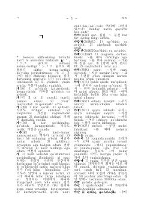

KLKoreys tilidagi soʻzlarning oʻzbekcha tarjimalari va izohlarini oʻz ichiga olgan lugʻat.
Ushbu kitob koreyscha-oʻzbekcha lugʻat boʻlib, unda koreys tilidagi soʻzlarning oʻzbek tilidagi maʼnolari va qoʻllanilishi keltirilgan. Lugʻat til oʻrganuvchilar uchun moʻljallangan boʻlib, soʻzlarning grammatik xususiyatlari va misollar bilan boyitilgan.